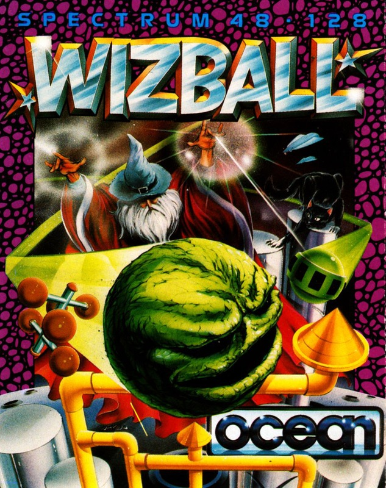
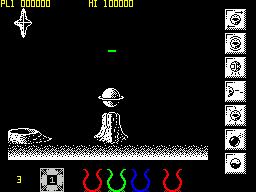
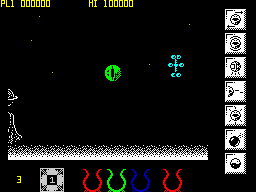
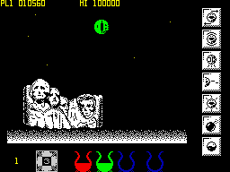

Wizball


{kind=link}

| Publisher: | Ocean |
| Price: | £7.95 |
| Year: | 1987 |
| Source: | CRASH, Issue 45 |

If you were a wizened Wizard with a magical cat on a planet filled with colourful landscapes you’d be jolly fed up if someone tried to turn it into monochrome, wouldn’t you? Of course you would. It’s like suddenly being told your Amiga has attribute clash.
And that’s exactly how Wiz feels when Zark and his unpleasant horde of helpers bleach his colourful Wizworld.

So, with a spherical Wizball space transporter to help him, Wiz begins to eliminate the invading colour-blind hordes. When the game begins, the transporter can spin to the left or right and bounce through the now drab Wizworld. As Wiz progresses, he encounters lethal aliens: waves of crabs, diamonds and multiarmed spindles, all threatening poor Wiz’s three lives. These creatures can be destroyed, for points, by the transporter. Many of them reveal green, smiling pearl faces when killed; by touching these faces Wiz collects extra capabilities, including supa-beams and blazers, protective sprays, smart bombs, shields, and a thruster and anti-grav powers to give him more control of the bouncing transporter.
But probably the most important thing for our crumbly warlock is Catelite, the magical feline.

a little local colour
Wizworld is composed of three colours: red, green and blue. To restore the brightness that Zark and his mob have drained away, Wiz must burst floating colour bubbles. As droplets from them fall earthward, Catelite can gather them up.
As he does so, each droplet is placed in one of three empty cauldrons — one cauldron for each colour in the magic land. When a cauldron is full, one colour of Wizworld comes back to life; Wiz and Catelite can then concentrate on gathering the remaining colours.
Completing a colour also allows Wiz to visit his Wiz-Lab and gather yet more unbelievable powers.
When all three colours have been collected, Wizworld is restored to its old glory, and Wiz and his cat can go home to toast the defeat of Zark with the wizard’s favourite drink — a well-earned glass of bat’s bowel and hemlock fizz. Yum.
CRITICISM

“Wizball is one of the most playable games I’ve ever seen, despite some trivial bugs. The controls are perfect, though they’re incredibly difficult to get to grips with (the instructions are less than clear, too)! The smooth-moving graphics are strikingly original, and the colour clash doesn’t affect them too much. This is one hell of a game, so go geddit.”
BEN ... 92%
“Wizball’s graphics are fantastic and well-defined, and the higher levels reveal more and more delights — including wild assortments of aliens. And the bouncing Wizball looks like a cross between a Critter and Bobby Bearing! There are some decent spot FX, and a good 128 tune. Though the controls are difficult at first, it gets more playable and rewarding as you progress — an ace game.”
NICK ... 90%
“Wizball is a classic. The graphics are brilliant, despite some colour clash, and sound is excellent on the 128s (but a bit limited on the 48s). At first the bouncing is difficult to control — but once it’s mastered and you’ve picked up a few of the right icons, Wizball becomes one of the best shoot-’em-ups I’ve played for ages. It’s so polished it shines!”
MIKE ... 93%
COMMENTS
| Joystick: | Cursor, Kempston, Sinclair |
| Graphics: | Weird, wonderful and well-defined despite some attribute clash |
| Sound: | Some pleasant ditties |
| General rating: | A few control problems hardly detract from entertaining and playable game |
| Presentation: | 87% |
| Graphics: | 88% |
| Playability: | 93% |
| Addictive qualities: | 92% |
| Overall: | 92% |